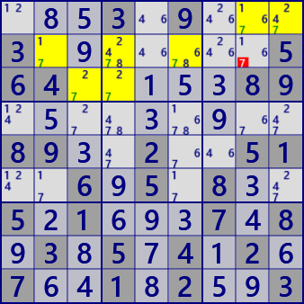

LockedCandidate
LockedCandidate has two types.
Type 1

If the digit N is only one row in the block,
it is excluded from the same row of the other block.
This also applies to the column direction.
In block b5, the digit #5 is only r6.
Therefore, in r6c9 of block b6, the digit #5 is excluded from the candidates.
.3.1.5.8...........8.....2...9.1.2...5.3.9.4..6.....7.7..6.1..851..7..69..8...7..
type 2

LockedCandidate type 2 is a solution that limits where the digits of the remaining blocks are located
when there are digits in only two lines of two blocks.
Focus on the #7 in the figure on the left. In b1 and b2, #7 exists only in r1 and r2.
At this time, in b3, #7 is in r1. Therefore, in b3, #7 is not in r2 and r3.
...3.9...3.......564.....89.........89..2..51..6.5.8..5.1...7.8.3.5.4.2.7..1.2..3